ArcturusXT Laser Capture Microdissection (LCM)
Important Note: Make contact with the UW SDRC to request access to use the LCM at least one-two weeks prior to anticipated use. When you go to LCM, you will be met in the lobby of WIMR and taken to the VA hospital. Fill out the LCM usage log with the appropriate information. When finished with LCM, shutdown equipment, logout on the log sheet, close and lock the door of the LCM room, and then make contact to confirm that you are finished.
Materials
- PEN Membrane Slides (Applied Biosystems, # LCM0522)
- Conical Tubes
- Pipettman and Tips
- 70%, 80%, 90%, 100% Ethanol
- Gloves
- Molecular-grade Water
- 30 µm and 5 µm SWMP Millipore Filters
- 1.5 mL Eppendorf Tubes
- DNase/RNase Shield (Zymo, #R1100-8-S)
- CapSure Macro LCM Caps (Applied Biosystems, # LCM0211)
- MicroAmp Thin-Walled Reaction Tube with Flat Cap 0.5 mL (Applied Biosystems, # N8010737)
Isolating Regions of Interest from Tissue Cross-Sections
Embedding
Follow the Cryoembedding protocol to embed parasites into OCT for subsequent sectioning.
Preparing PEN Membrane Slides for Cryosectioning
-
Under BSC, treat PEN membrane slides for 1 min with Eliminase.
-
Rinse the slides by dipping 10 times with 1-2 seconds between dips in three successive conical tubes filled with 30 mL DEPC-treated water.
-
Dip slides in 95% ethanol 10 times. Air-dry for 5–10 min.
Cryosectioning
Follow Follow the Cryosectioning to produce tissue sections for LCM. 20 µm sections are typically collected for all stages of filarial parasites.
Transferring sections from cryostat onto PEN membrane
-
Place a PEN Membrane on the back half of the main stage in the cryostat.
-
Trim the embedded sample block until dye dot is visible. Count the number of slices passed until no more dye is visible. Calculate the number of slices required to reach tissue by comparing the number of dye slices across the dot to the width of the dot in pixels, this gives a slice to pixel ratio. Use the measurement between the end of the dot and the specimen to get another slice to pixel ratio. Solve for the theoretical number of slices it will take to get to the start of the worm by cross-multiplying. It is good practice to underestimate this number by at least 20%. Visibly inspect slices periodically under the microscope and proceed if no tissue is visible.
-
Once you visibly see tissue in your section, using clean forceps, transfer the slice to the PEN membrane slide in a column-like fashion. Continue collecting slices until the PEN membrane slide is completely filled with sections (usually 35-40 sections per slide).
Note: Use caution when transferring sections to the PEN membrane, so the PEN membrane doesn’t get torn or punctured by the forceps.
-
Remove the slide from the inside of the cryostat and move to room temperature for 2-5 minutes.
-
Place the slide in a 50 mL conical tube. Leave the tube containing the slide at room temperature and bring back to the lab for processing.
-
To process the slide, remove the slide from the conical tube and place in a clean cover from a pipette tip box. Using a p1000 pipette, carefully flood the slide with 70% EtOH. Let sit for 1-2 minutes.
-
Tilt the slide to dump the ethanol off. Using a p1000 pipette, gently wash the slide with molecular grade water.
-
Using a p1000 pipette, carefully flood the slide with 80% EtOH. Let sit for 1 minute.
-
Tilt the slide to dump the ethanol off. If you notice white on the slide after removing the ethanol, this is the remaining OCT that has not been fully removed. Use a p1000 and molecular grade water to wash the white areas until the OCT is dissolved.
-
Using a p1000 pipette, carefully flood the slide with 90% EtOH. Let sit for 1 minute.
-
Tilt the slide to dump the ethanol off. Using a p1000 pipette, carefully flood the slide with 90% EtOH. Let sit for 1 minute.
-
Tilt the slide to dump the ethanol off. Using a p1000 pipette, carefully flood the slide with 100% EtOH. Let sit for 1 minute.
-
Tilt the slide to dump off the ethanol. Allow to air dry. Wipe the bottom and edges of the slide to facilitate quicker drying.
-
Verify there are visible sections on the slide using compound microscopy.
-
Place the slide back into the 50 mL conical tube, label the tube, and place it in the -80ºC until you are ready to go to the LCM.
Isolating Regions of Interest from Whole-Mount Microfilariae
Ethanol fixing mf
-
Filter shipped mf using a 30 µm SWMP Millipore filter. Push the mf through the filter once, and collect the flow-through.
-
Push the flow-through through a new 5 µm filter. Remove the filter from the filter holder using clean forceps and transfer to a 15 mL conical tube containing 1 mL of RPMI + 1% P/S. Rinse the filter off by swirling it around inside the conical tube using forceps.
-
Remove the filter from the conical tube and discard. Transfer the contents of the conical tube to a 1.5 mL Eppendorf tube. Centrifuge at 1000 x g for 5 minutes. Remove the supernatant without disturbing the pellet of mf.
-
Using a pipette, add 1 mL of 100% EtOH drop by drop to the pellet of mf. Once all the ethanol is added briefly vortex so the mf are evenly suspended throughout the ethanol.
-
Label and place the tube of mf at -80ºC until you are ready to go to LCM.
LCM Operation
LCM Software Startup
-
UW SDRC will start up the Arcturus LCM Machine and computer. Ask for the login username and password when you go for your first use.
-
Once the main working panel loads, press Present Stage in the top right corner of the screen. This will allow you to load your Arcturus Caps and PEN membrane slides.
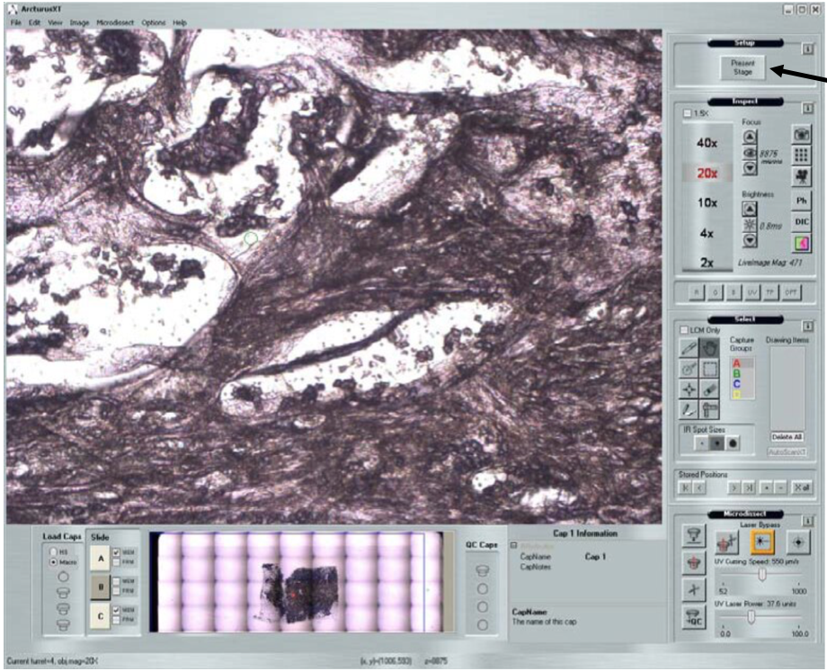
-
Verify that the UV and IR settings are correct by clicking on Options then Microdissect, then Select Settings. The setting parameters are shown below:
-
UV Settings:
- UV Tab Length: 3
- Cut: 10
- Current: 15
- Cut Speed: 300
- Frequency: 500
- Thickness: 20
-
IR Settings:
- IR Spots: 3
- Spacing: 60
- Diameter: 75
- Power: 99
- Duration: 49
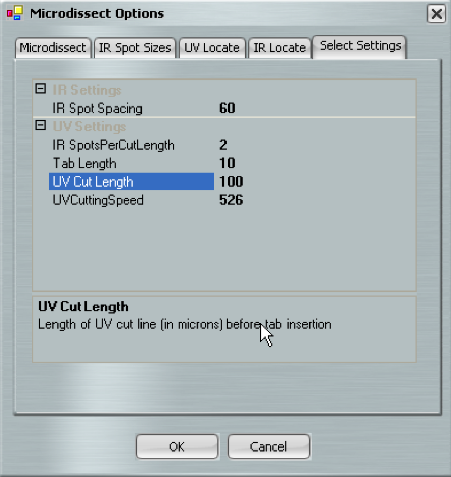
-
Preparation of PEN membrane slides containing Whole-Mount Microfilariae
Place the sample of ethanol-fixed mf on wet-ice to bring to the LCM. At the LCM, when you are ready to add the slide to the machine, add the mf to the RNase treated PEN membrane slide (see above on how to prepare PEN membrane slides). Briefly vortex the tube by flicking so mf are evenly suspended in the ethanol. Using a p20 pipette, pipette 3-4 10 µL aliquots equidistant from each other along the length of the PEN Membrane. Allow the ethanol to evaporate before adding the slide to the machine.
Preparation of PEN Membrane Slides containing Parasite Tissue Cross-Sections
-
Remove from previously prepared PEN membrane slides from ice and immediately immerse in cold 100% ethanol for 30 seconds.
-
Immerse the slide in room temperature 100% ethanol.
-
Air dry slides for 2-3 minutes. This will prevent rehydration of sections and prevent re-activation of RNase activity during warming.
Locating Parasite Samples for Microdissection
-
Load your caps and slide onto the ArcturusXT system. Load slide (one at a time) so that the frosted part of the slide is pointing to the right, and the PEN membrane facing up. Push the tension button, in order to load the slides. Release tension button to lock slides into place.
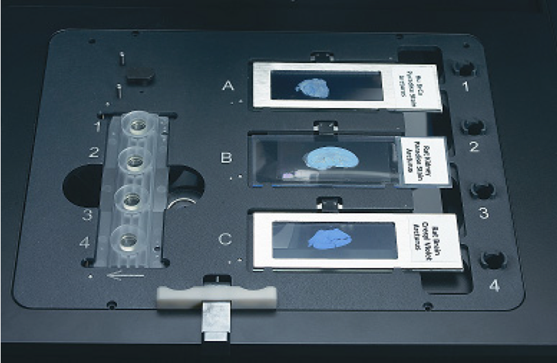
-
Select the location you put your slide (A, B, C) and click on the location of the Arcturus CapSure Cap.
-
Acquire a slide overview by right-clicking in the slide overview area at the bottom of the screen, and click Acquire Overview Image.
-
Once the slide overview image has been acquired, move the stage to display an area of interest on the PEN membrane by moving the trackball. Once at the desired area of interest, click the Place Cap button to add the cap to the slide.
-
The instrument places a cap at the center of the field of view designated by the red box in the slide overview image. The cap location is outlined in green. The entire area inside the circle is available for capture. Move the stage so the cap is on an area away from the tissue but still within the cap.
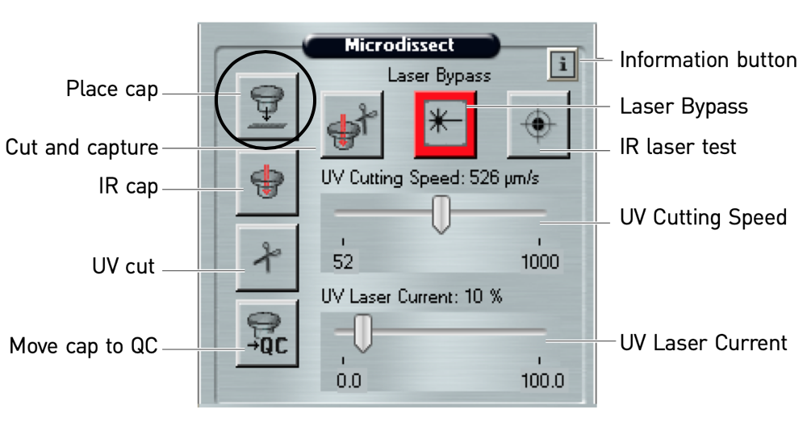
-
Before you start locating sections or mf, pick a random spot on the slide that does not contain samples. Locate UV by clicking on Options, then Microdissect, then Locate UV tab. Click UV Locate. In the main image window, place the cursor in the center of the UV laser spot and click the spot. Click the OK button next to Locate UV.
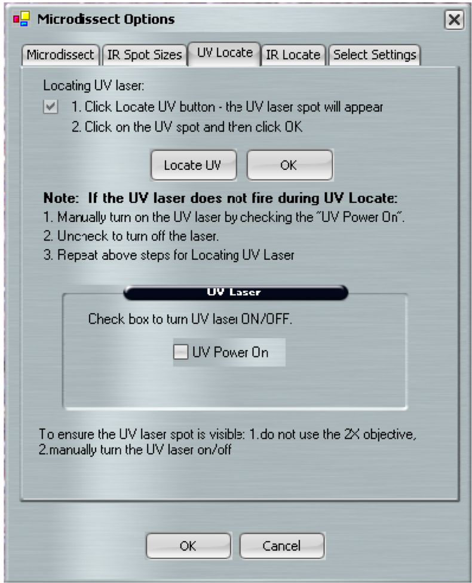
-
Locate IR by clicking on Options, then Microdissect, then IR Locate tab. Click IR Locate. In the main image window, place the cursor in the center of the IR laser spot and click the spot. Click the OK button next to the IR Locate button. Click the OK button on the bottom of the dialogue box to close the dialogue box.
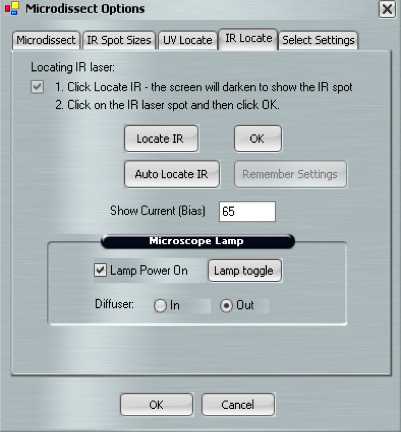
Locate mf for microdissection
-
Select the Single IR Spot tool and select Capture Group A.
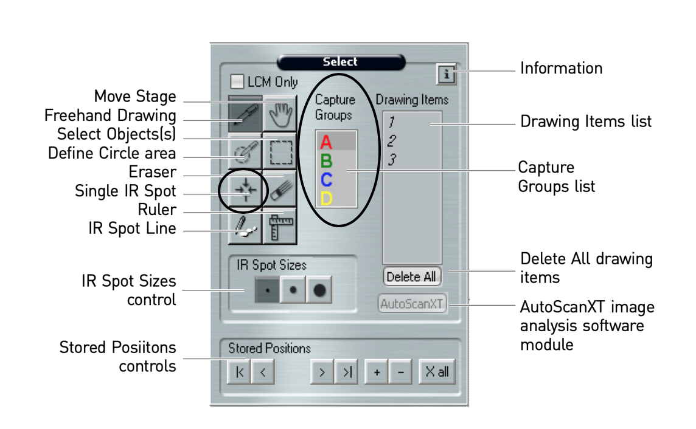
-
Scroll through the captured image at the bottom of the screen using the trackball. When you get to a section or mf add an IR spot by clicking near the tissue of interest, but not directly on top of the section.
-
Click on the first number listed under Drawing Items. This will bring up the first tissue section or mf of interest. Use the trackball, focus, and brightness to make the image as clear as possible. View the mf at 20X and view adult tissue sections at 10X.
-
Delete the first Drawing Item in Capture Group A by right clicking on the number and select the Delete Selected Item. Then switch to a different Capture Group (B-D).
-
Draw three circles of 75 µm diameter on top of the mf using the IR Spot tool.
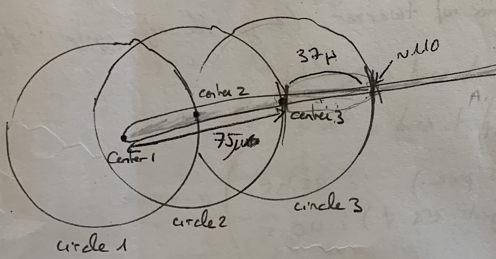
-
Deselect the IR spot tool and select the Freehand drawing tool. Draw 3-4 lines following the arc on either side of Center #3 (refer to image above).
-
Delete the IR Spots used to draw the circles on top of the mf. Then, using the Freehand drawing tool. Complete the circle using the two arcs previously made. Make one side of the circle longer than the other so it looks like a peanut.
-
Once the circle has been made, add a few IR spots in the bigger end of the peanut. Make sure the IR spots are not touching the mf.
-
Once the IR spots are added and the circle has been drawn to capture the desired area of tissue, click the Cut and Capture button.
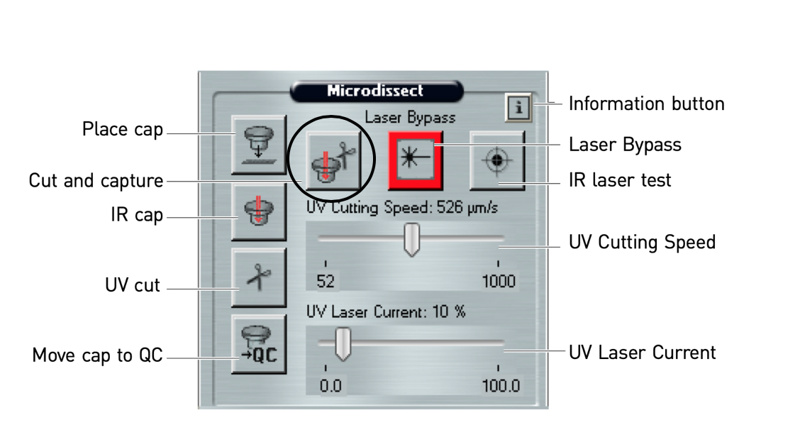
-
Verify that the cap captured and collected the tissue section of interest by moving the cap to a new area on the slide. You can either see the section in the new field of view, or you can go back to the section that you cut and see if the section has been removed. If microdissection was incomplete, you can repeat the cut and/or capture steps.
-
Once the section has been captured, remove the previous IR spots and UV circle by selecting all in the corresponding Drawing Items in the Drawing Items box. Once all are selected, right click and select Delete Selected Objects. Repeat steps #3-10 until all mf sections are collected.
-
Once all sections are collected, select the Move Cap to QC button. This will move the cap to the QC area. Click the Present Stage button. Remove the cap from the QC section using sterile forceps. Place the cap on a LCM Reaction Tube that contains 100 µL of DNase/RNase Shield. Label the tube and place on wet ice to bring back to the lab for RNA extraction.
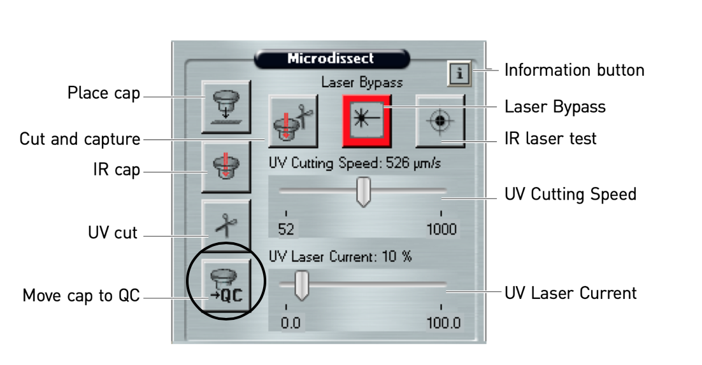
-
Press the tension button in to release the springs holding the slides in place, and then lift each slide out of its slot. Load a new slide and caps to continue microdissection, or close the Arcturus software to end your session.
Locate Parasite Tissue Cross-Sections for Microdissection
-
Select the Single IR Spot tool and select Capture Group A.
-
Scroll through the captured image at the bottom of the screen using the trackball. When you get to a section or mf add an IR spot by clicking near the tissue of interest, but not directly on top of the section.
-
Click on the first number listed under Drawing Items. This will bring up the first tissue section or mf of interest. Use the trackball, focus, and brightness to make the image as clear as possible. View the mf at 20X and view adult tissue sections at 10X.
-
Delete the first Drawing Item in Capture Group A by right clicking on the number and select the Delete Selected Item. Then switch to a different Capture Group (B-D).
-
Select the Freehand drawing tool. Draw a circle around the area of interest like the image below.
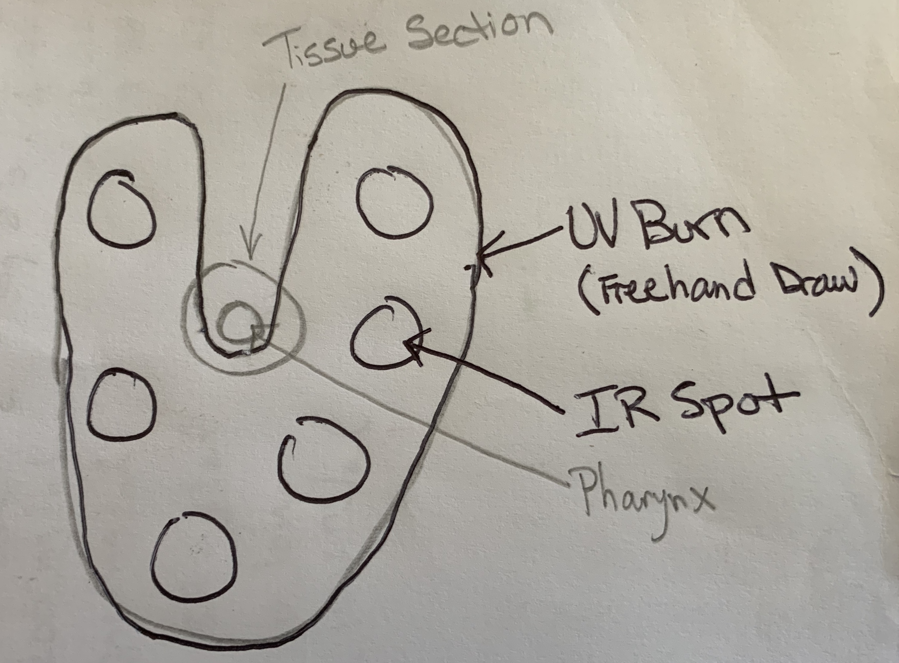
-
Once the IR spots are added and the circle has been drawn to capture the desired area of tissue, click the Cut and Capture button.
-
Verify that the cap captured and collected the tissue section of interest by moving the cap to a new area on the slide. You can either see the section in the new field of view, or you can go back to the section that you cut and see if the section has been removed. If microdissection was incomplete, you can repeat the cut and/or capture steps.
-
Once the section has been captured, remove the previous IR spots and UV circle by selecting all in the corresponding Drawing Items in the Drawing Items box. Once all are selected, right click and select Delete Selected Objects.
-
Repeat steps #3-8 until all mf sections are collected. Once all sections are collected, select the Move Cap to QC button. This will move the cap to the QC area. Click the Present Stage button. Remove the cap from the QC section using sterile forceps. Place the cap on a LCM Reaction Tube that contains 100 µL of DNase/RNase Shield. Label the tube and place on wet ice to bring back to the lab for RNA extraction.
-
Press the tension button in to release the springs holding the slides in place, and then lift each slide out of its slot. Load a new slide and caps to continue microdissection, or close the Arcturus software to end your session.
RNA Extraction from LCM Samples
-
Use new filter tips, clean BSC work area in cell culture hood with Eliminase.
-
Remove the cap from the LCM reaction tube and add 300 µL of cold Trizol LS. Place the cap back on the tube. Invert the tube and let sit in BSC for 15 minutes at room temperature.
-
Revert the tube and remove the cap from the tube. To the tube, add 400 µL of 100% ethanol. Transfer the contents of this tube to a Zymo Spin Column.
-
Follow the Zymo Directzol MicroPrep RNA kit protocol.
-
Use 8 µL of nuclease-free water for the final elution. Label the tube with the sample information and place in -80ºC until it comes time to do the library prep.